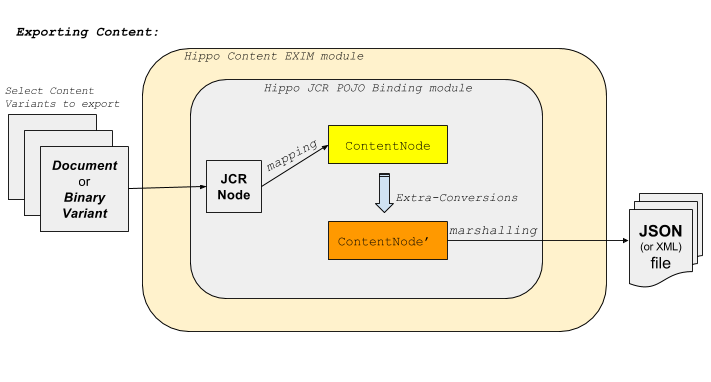
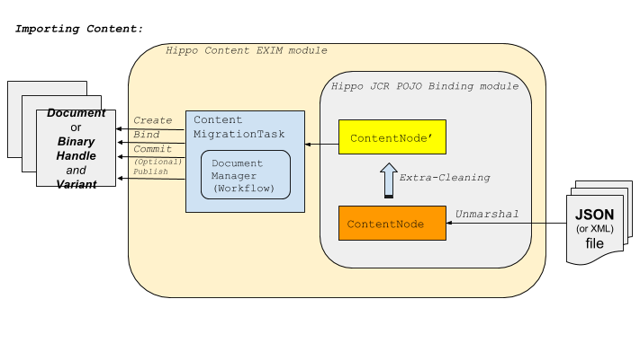
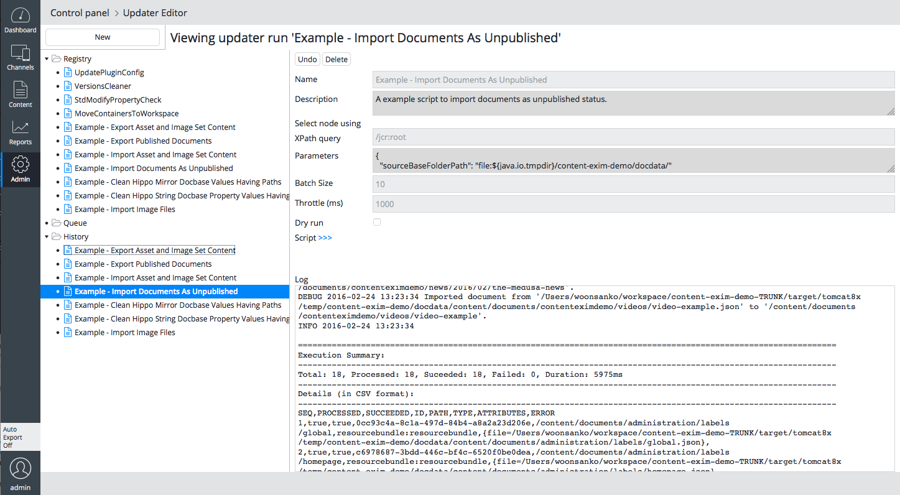

Introduction
What is Hippo Content EXIM (EXport/IMport)?
This project provides higher level features and examples of Content Import and Export, using Hippo Workflow API (for higher/workflow level document management), Hippo JCR POJO Binding library (for lower level JCR mappings/bindings) and Gallery Magick Image Processing library (for thumbnail image generation).
Also, this project provides Built-in REST Services for content exporting and importing.
So, while Hippo JCR POJO Binding library focuses only on JCR Node level mappings and bindings and doesn't provide any Hippo Workflow level operations, this project aims to provide higher level, that is, Hippo Workflow level, Content Export/Import features.


Code base on GitHub
The code of this project is on GitHub at https://github.com/bloomreach-forge/content-export-import/.
Design Concepts
Focus on the cores, trim off chores
In other content import tools such as the discontinued "Hippo CMS Import tool"
or any custom import modules (e.g, DaemonModule with REST API calls),
you can easily see them very complicated.
Those tools do provide too many features such as task execution engine,
a specific POJO mapping, link resolutions between imported documents and binaries,
specific XML format support, etc.
It sounded promising, but those were too much to maintain and furthermore most of those services were not really core features that a content import tool should provide.
We believe the core features needed for a content import tool are just as follows instead:
- Simple POJO-based mapping from JCR content and simple binding to JCR content back. The POJO can be imported from or exported to whatever types (JSON, XML, etc.) of files nowadays.
- Easy Hippo Workflow operations for content creation, commit changes with the POJO-based content bean, and publish or depublish content at specific location.
The other features can be easily replaced by other existing services. For example,
-
Task execution engine can be replaced by
Groovy Updater Script,
which support
batch size,throttle, etc. for system availability in batch processes. You can also push a script into the queue using JCR API if you want it scheduled at specific time, too. - POJO mapping is not that important, especially if the mapping/binding is not based on Industry standards. So, simple POJO-based bean mapping from/to JCR nodes (provided by Hippo JCR POJO Binding library) is already good enough in most use cases. The library is also easy enough, so developers can convert from/to their own domain-specific beans easily if needed.
- The simple POJO-based mapping/binding (provided by Hippo JCR POJO Binding library) can be easily marshalled/unmarshalled to/from JSON/XML easily, supporting (de facto) Industry standards such as Jackson or JAXB.
-
Use FileObject
of Apache Commons VFS2
whenever marshing/unmarshaling to/from files, in order to take advantage of its flexibility.
So, developers can provide any
FileObjects to marshal/unmarshal to/from. - Link resolutions were considered too seriously in content import modules in the past. For example, the discontinued "Hippo CMS Import tool" tried to build a dependency tree based on link data between the imported content data and keep an in-memory map to keep path-to-uuid pairs to use in ordered content import processing. This has been very error-prone and really complex to maintain. We can now think of a different and simpler way. See the next section for detail.
Keep it simple, stupid
As mentioned above, link resolution between imported documents caused so complicated implementations in other content import modules in the past.
In this module, we would like to avoid that kind of complication by simplifying the approach like the following:
-
Suppose a document A is to be imported into
/content/documents/myhippoproject/A, a document B is to be imported into/content/documents/myhippoproject/B, and the document A is to be linked to the document B (e.g,A/relateddoc/@hippo:docbase="{UUID_of_B}"). -
In content importing process, let's simply set the link data to the path of B instead of a (becoming-resolved) UUID of B.
For example,
A/relateddoc/@hippo:docbase="/content/documents/myhippoproject/B". - Because UUID is basically determined by the target repository where all the content are imported to, it is hard to keep correct processing order for all the related document content with holding the path-to-UUID map data properly by its nature. It would be even worse and incomplete if there are any circular relationships.
- Instead of all those complications, if we simply store the related content paths instead of UUIDs (being determined by the target repository), then we don't have to consider the link relationships between imported content but we can simply focus on each unit of content to import.
-
After all the units of content import process are done, we can simply run another groovy updater script
to update any link property having non-UUIDs (e.g,
A/relateddoc/@hippo:docbase="/content/documents/myhippoproject/B") by finding the UUID of the linked content by the path information (e.g,A/relateddoc/@hippo:docbase="{UUID_of_B_resolved_by_the_path}"). It's simple, stupid, isn't it? :-)
Main Features
This project provides Built-in REST Services for content exporting and importing.
Also, it provides task components for content exporting and importing as well as example Groovy Updater Scripts.
- Binary Exporting / Importing Task Components and Example Groovy Updater Scripts.
- Document Exporting / Importing Task Components and Example Groovy Updater Scripts.
- Hippo Folder/Document Workflow Management Component: DocumentManager
- All the components depend only on JCR API, Hippo Repository API and utilities. So they can be used in any applications: CMS, HST (SITE) or stand-alone applications.
- Running demo project
Content Migration Task Components
This project provides migration task componets which can be used in any Java application or in Groovy updater scripts instead of trying to provide a whole new UI.
There are basically four content migration task interfaces for which components are provided by this project:
| Interface Name | Description | Implementation(s) |
|---|---|---|
| BinaryExportTask | ContentMigrationTask to export binary (gallery/asset) data to ContentNode objects. | DefaultBinaryExportTask |
| DocumentVariantExportTask | ContentMigrationTask to export document variant nodes to ContentNode objects. | WorkflowDocumentVariantExportTask |
| BinaryImportTask | ContentMigrationTask to import binary (gallery/asset) data from ContentNode objects. | DefaultBinaryImportTask |
| DocumentVariantImportTask | ContentMigrationTask to import ContentNode objects and create or update documents. | WorkflowDocumentVariantImportTask |
Also there are some other core components used by the task implementations:
| Interface Name | Description | Implementation(s) |
|---|---|---|
| DocumentManager | Hippo CMS Document/Folder Workflow manager to be used when maintaining Hippo folders and documents. | WorkflowDocumentManagerImpl |
Example Groovy Updater Scripts using the Task Components
You can find the following example groovy updater scripts using the task components in the demo project:
| Updater script name | Description |
|---|---|
| Example_Export_Asset_and_Image_Set_Content | A example script to export asset and image set content, using BinaryExportTask. |
| Example_Export_Published_Documents | A example script to export published documents, using DocumentVariantExportTask. |
| Example_Import_Asset_and_Image_Set_Content | A example script to import asset and image set content, using BinaryImportTask. |
| Example_Import_Image_Files | A example script to import image set content by scanning image files in a directory without JSON files, using BinaryImportTask. |
| Example_Import_Documents_As_Unpublished | A example script to import documents as unpublished status, using DocumentVariantImportTask. |
| Example_Clean_Hippo_Mirror_Docbase_Values_Having_Paths | A example script to clean interim hippo:docbase values of Hippo Mirror nodes having paths instead of UUIDs. |
| Example_Clean_Hippo_String_Docbase_Property_Values_Having_Paths | A example script to clean interim String Docbase property values having paths instead of UUIDs. |
You will see more explanations in the Tutorial pages.
Demo Application
Demo Application with Bloomreach Experience Manager 17
In the demo subfolder, you can build and run demo application, which contains all the examples explained in this site documentation.
Here are example comomands to check out, build and run demo application:
$ cd demo
$ mvn clean verify
$ mvn -P cargo.run
Visit http://localhost:8080/cms/ and Control Panel / Updater Editor in the Admin perspective to test it with the following example groovy updater scripts like the following (as ordered):
- Example_Export_Asset_and_Image_Set_Content
- Example_Export_Published_Documents
- Example_Import_Asset_and_Image_Set_Content
- Example_Import_Image_Files
- Example_Import_Documents_As_Unpublished
- Example_Clean_Hippo_Mirror_Docbase_Values_Having_Paths
- Example_Clean_Hippo_String_Docbase_Property_Values_Having_Paths

Note: As a functional testing, you might want to remove the following nodes through CMS Console (http://localhost:8080/cms/console/) to see how it exports and imports content after exporting all the content and before importing all the content back (between #2 and #3).
/content/gallery/contenteximdemo/*/content/assets/contenteximdemo/*/content/documents/contenteximdemo/*
Project status
Please see Release Notes.